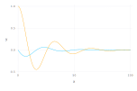
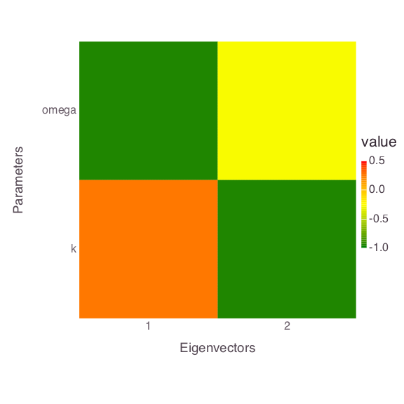
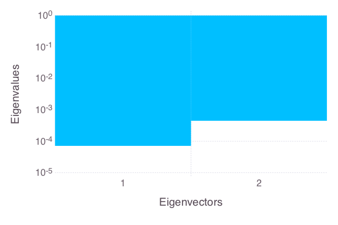
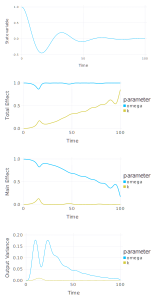
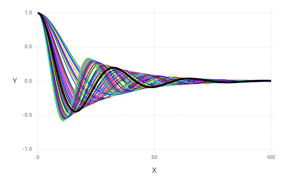
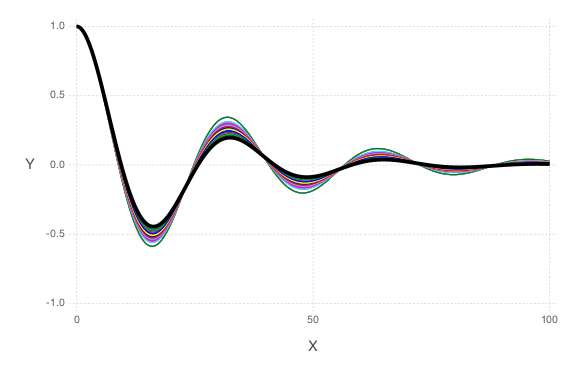

Analysis of an Ordinary Differential Equation (ODE)
All the figures below are generated using examples/ode/ode.jl.
ODE
Unknown ODE parameters
- k
Example ODE solution

For model parameters:
- k = 0.1
- = 0.2
Local sensitivity analysis


Global sensitivity analysis (using eFAST)

Probabilistic distributions of the prior parameter uncertainties are:
- k = LogUniform(0.01, 0.1)
- = Uniform(0.1, 0.3)
Bayesian sensitivity analysis
Observations
Synthetic observations are applied to constrain the ODE parameters

Observation errors are equal for all the sample locations with standard deviation equal to 1 (observation weight = 1 / observation standard deviation = 1 / 1 = 1)
Prior parameter uncertainties
k only

only

Both parameters

The observation data are plotted as a solid black line.
Histograms/scatter plots of Bayesian MCMC results

Posterior parameter uncertainties
Note that now the parameter uncertainties are constrained by the observation data.
k only

only

Both parameters

The observation data are plotted as a solid black line.